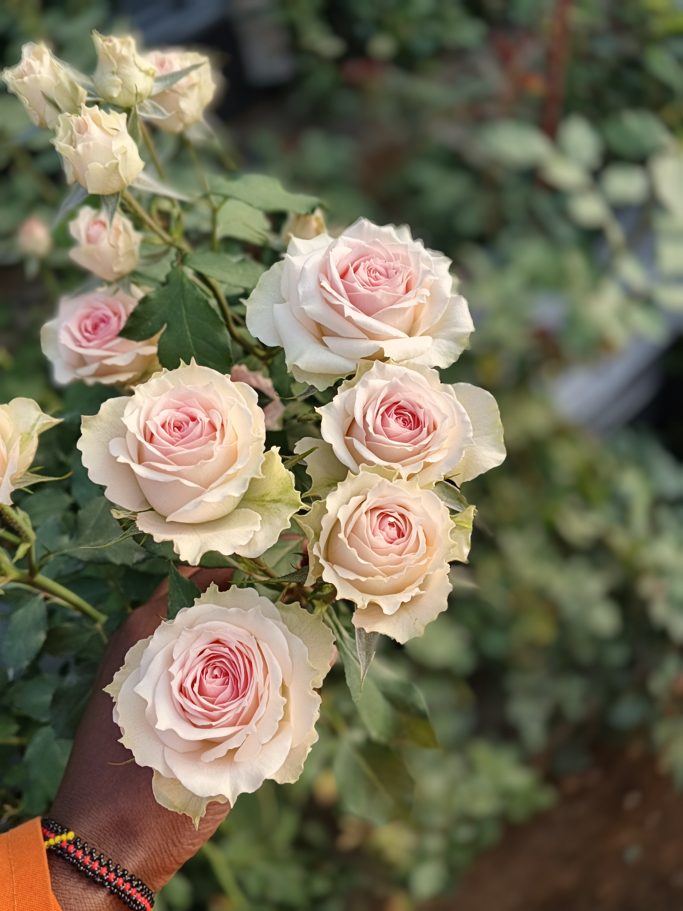
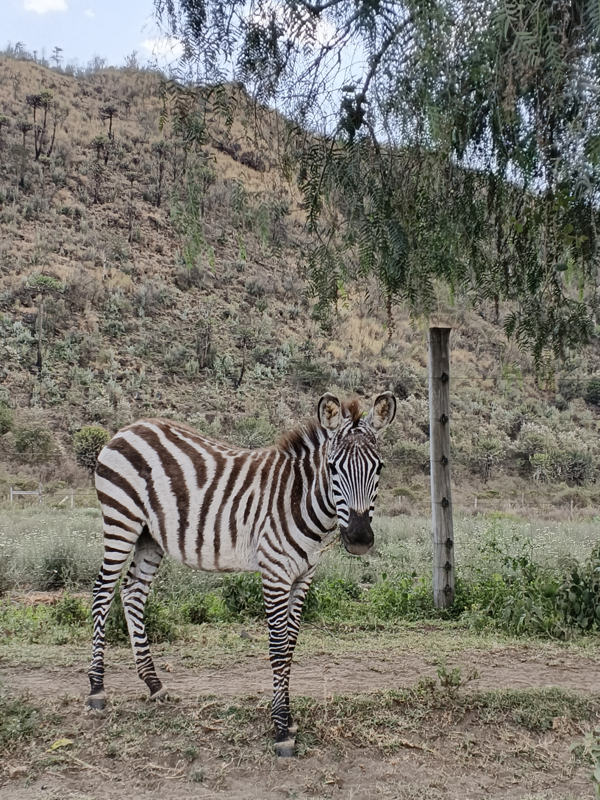

My Media



Above is some favourite moments of the past year which basically entails a trip to Lake Naivasha, a spray rose and a cool nature photo.
In addittion is a software photo which is something i've been eager to do and love to gain a lot from it.